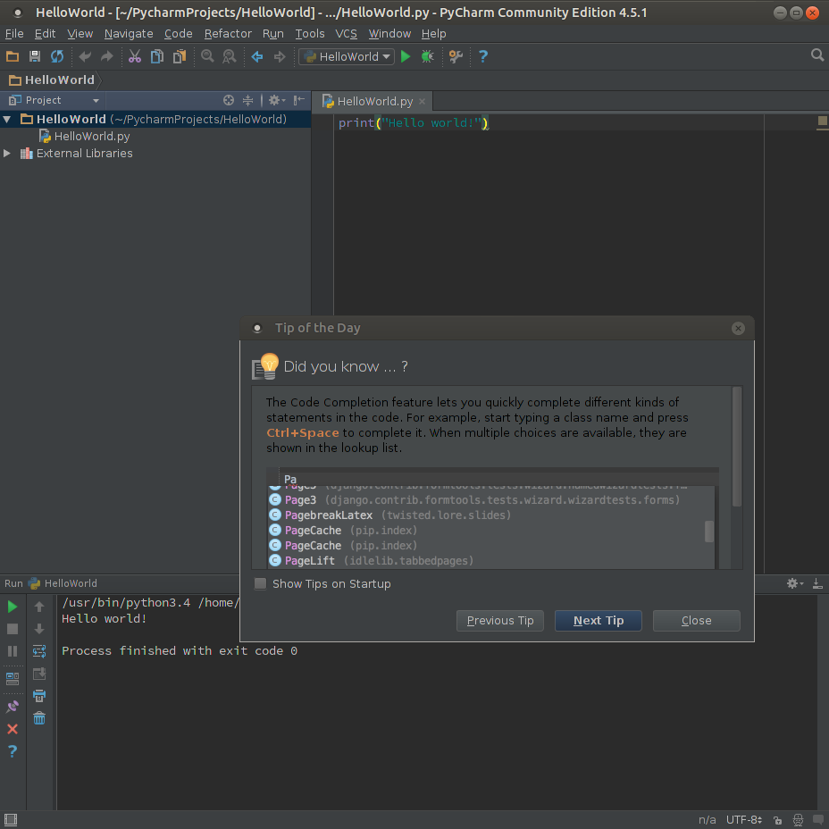
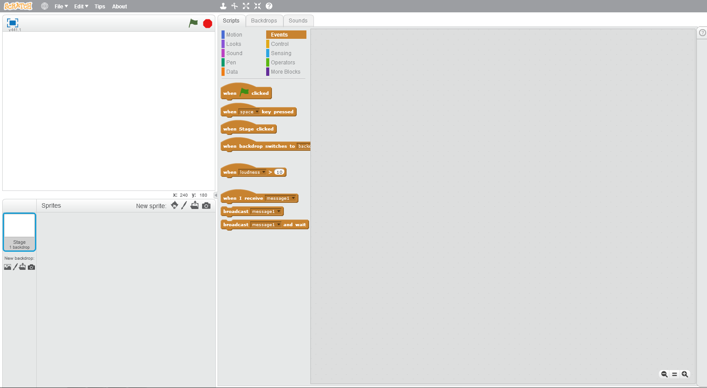

Where to Code?
There are several places where you can code. These IDEs or Integrated Development Environments are applications that are used to develop code properly.
IDEs can range from software applications to online coding editors.
The following tiles list some IDEs that you can use to start or transition your coding journey.
The following tiles list some IDEs that you can use to start or transition your coding journey.
Visual Studio Code
Visual Studio Code is one of the most famous code editors in the world. It is constantly used for debugging, version control, and task running. It is completely free and only takes a quick download to install.
It's completely beginner friendly and is used by coders of all stages, whether they be a novice or an expert.

PyCharm
PyCharm is a dedicated Python Integrated Development Environment (IDE) providing a wide range of essential tools for Python developers, tightly integrated to create a convenient environment for productive Python, web, and data science development.

Online Code Editors
Online Code Editors are tools that can be accessed through browsers. These Code Editors are as useful as some software IDEs like Visual Studio Code and Pycharm.
Some of the following are online code editors:
JSFiddle
CodeSandbow
Codepen
JSFiddle
CodeSandbow
Codepen
